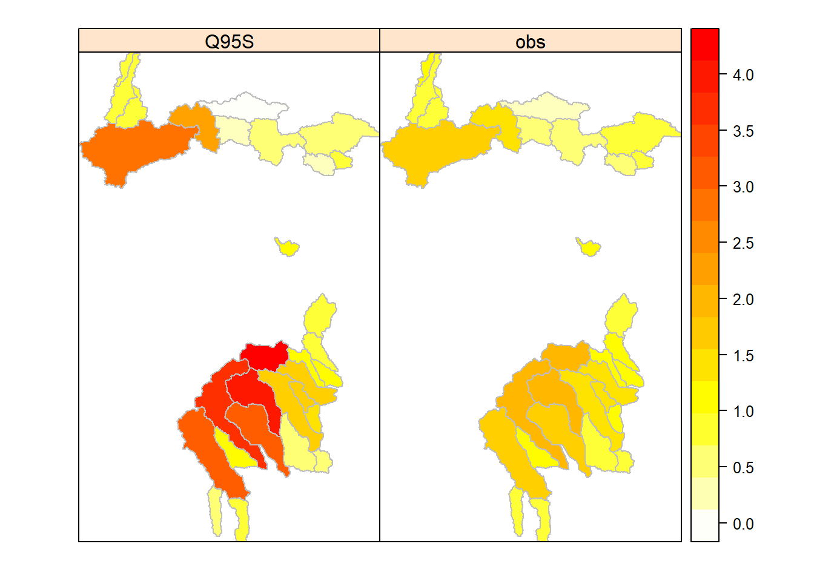
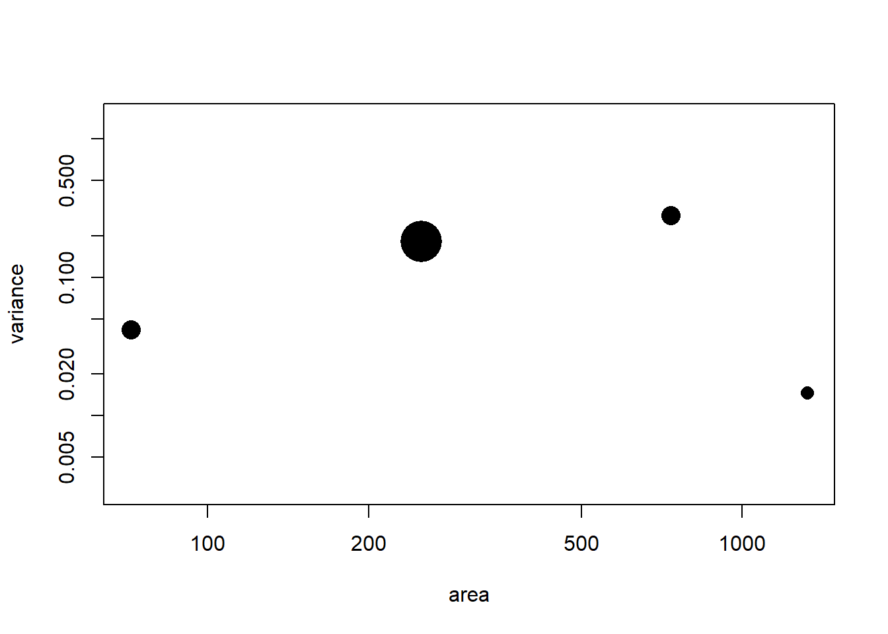
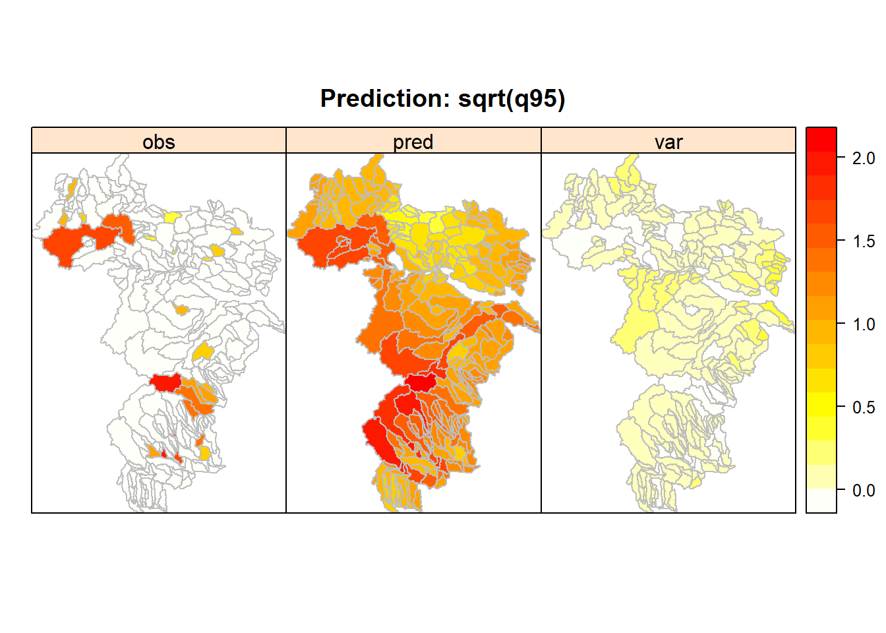

This vignette demonstrates the application of Top-kriging presented in Skøien et al. (2006, 2014) to model low flows along the stream network. We use a dataset of 30 gauged and 373 ungauged catchments situated in the forelands and pre-Alps in the north-east of Austria, for details see Section 4.5.2. The target variable is the long-term low flow characteristic \(q_{95}\), i.e. \(Q_{95}\) standardized by catchment area. The data consist of overlapping catchment polygons provided in two Shapefiles, the first containing the observed catchments only, the second containing all catchments (prediction locations incl. observed catchments).
In this worked example, we learn
We will use the rtop package to perform kriging along
the river network, the package sf for handling geospatial
data, and the package sp for plotting. We load the packages
(after installation at first use).
library(rtop)
library(sf)
library(sp)The methods used here take the catchment topology into account. Our data are therefore Shapefiles that contain the (overlapping) catchment polygons together with an attribute table containing the low flow index and other catchment information. The data is provided in two files. The first file named ´File1.shp´ contains the 30 observed catchments and is used for model fitting. The second one named ´File2.shp´ contains the whole data set (prediction locations incl. observed catchments) and is used for the prediction.
For the import, we first set the path of the data directory where the Shapefiles are stored:
rpath <- "../../data/catchment_shape_files"We can now read the Shapefile containing the observation dataset.
x.obs.sf = st_read(rpath, "File1")## Reading layer `File1' from data source
## `C:\Users\laaha_admin\Documents\GitHub\hydrodroughtBook\data\catchment_shape_files'
## using driver `ESRI Shapefile'
## Simple feature collection with 30 features and 6 fields
## Geometry type: POLYGON
## Dimension: XY
## Bounding box: xmin: 506594.3 ymin: 317449.1 xmax: 660786.7 ymax: 568303.8
## Projected CRS: LAMBERTx.obs = as(x.obs.sf, "Spatial")We then create a new column x.obs$obs that shall contain
the observed values of our target variable. Note that top-kriging
requires the flow characteristic standardized per unit area (specific
discharge in \(l s^{-1} km^{-2}\)),
which may need to be calculated from absolute discharge values. In our
case, the observed values of specific low flow x.obs$Q95S
are simply assigned to the newly created column
x.obs$obs.
x.obs$obs <- x.obs$Q95SThe imported object belongs to the
SpatialPolygonsDataFrame-class, which consists of 5 slots.
We can access each slot (using “@”). This allows us to check the data
structure of the attribute table:
slotNames(x.obs)## [1] "data" "polygons" "plotOrder" "bbox" "proj4string"str(x.obs@data)## 'data.frame': 30 obs. of 7 variables:
## $ EZGID : num 696 1887 1954 2058 2960 ...
## $ HZBNR : num 208108 208512 208678 208447 211508 ...
## $ SHAPE_AREA: num 6.07e+07 6.47e+07 7.20e+07 1.31e+08 1.42e+08 ...
## $ AREASQKM : num 60.7 64.7 72 130.6 142.3 ...
## $ Q95 : num 0.06 0.06 0.05 0.05 0.11 0.14 0.14 0.08 0.2 0.16 ...
## $ Q95S : num 0.98 0.96 0.75 0.38 0.91 1.2 0.95 0.61 1.07 1.79 ...
## $ obs : num 0.98 0.96 0.75 0.38 0.91 1.2 0.95 0.61 1.07 1.79 ...The import and preparation of the prediction dataset is done analogously.
x.pred.sf = st_read(rpath, "File2")## Reading layer `File2' from data source
## `C:\Users\laaha_admin\Documents\GitHub\hydrodroughtBook\data\catchment_shape_files'
## using driver `ESRI Shapefile'
## Simple feature collection with 404 features and 6 fields
## Geometry type: MULTIPOLYGON
## Dimension: XY
## Bounding box: xmin: 499505.4 ymin: 313429.2 xmax: 693499.9 ymax: 587318.3
## Projected CRS: LAMBERTx.pred = as(x.pred.sf, "Spatial")
x.pred$obs <- x.pred$Q95S # also in x.pred for plotingThe easiest way to use the functionality of the rtop-package
is to create a particular rtop-object. In this step, we need to
specify the observations and the
predictionLocations object and use the
formulaString argument to define the dependent variable and
the kriging method. We use obs~1 to perform ordinary
Top-kriging of a dependent variable obs. For large data
sets this step may be time consuming so it is recommended to set the
option gdist=TRUE to calculate a simplified distance
measure that will reduce computation time.
params <- list(gDist = TRUE)
rtopObj <- createRtopObject(observations=x.obs, predictionLocations=x.pred, formulaString = obs~1, params = params)
names(rtopObj)## [1] "observations" "predictionLocations" "formulaString"
## [4] "params"For most functions, the parameters can either be set directly during
the function call, or specified in a params list and set as
default using the params argument.
Before starting the geostatistical analysis we need to verify the basic assumption of kriging that data shall follow a Gaussian distribution to achieve best linear unbiased estimates. We see from the histograms that the raw data exhibit a skewed distribution so we test different variable transformations.
hist(rtopObj$observations$obs)hist(log(rtopObj$observations$obs))hist(sqrt(rtopObj$observations$obs), breaks=9)We can see that the sqrt-transformation performs somewhat better than the log-transformation to approximate a Gaussian distribution. Alternatively, the Box-Cox transformation (Section 7.X) can be used to fine-tune the transformation parameters to better approximate normality.
The best-performing transformation is then applied to the
obs data slots, to transform the observations
and predictionLocationsin the rtopObj.
rtopObj$observations$obs <- sqrt(x.obs$Q95S)
rtopObj$predictionLocations$obs <- sqrt(x.pred$Q95S)We finally review the observations in the rtobObj to
ensure that our transformation was successful.
hist(rtopObj$observations$obs, nclass=9)We compute summary statistics to provide insight into the distribution of the (transformed) low flow data.
summary(rtopObj$observations$obs)## Min. 1st Qu. Median Mean 3rd Qu. Max.
## 0.3317 0.8077 0.9849 1.1190 1.3407 2.0298In a final explorative assessment, the values are presented in a geographic map to provide a first impression about the spatial distribution of low flows in the study area. In the left panel we show the untransformed specific low flows, in the right panel the transformed values. We can observe a spatial pattern of decreasing low flows from west to east. The highest values can be found in the south-west in a low-mountain range of about 1000 m altitude.
spplot(obj=rtopObj$observations, col.regions = rev(heat.colors(n=100)), col="grey",
c("Q95S", "obs"))
As in classical geostatistics, the variogram analysis proceeds in two steps. We first calculate the sample variogram representing the spatial correlation structure of observed low flow characteristics. We then fit a theoretical variogram model to the sample variogram, which is used to estimate the optimal weights for the kriging estimator.
A call to rtopVariogram adds the sample variogram to the
rtopObj. The package supports both binned variograms and
variogram clouds.
rtopObj <- rtopVariogram(rtopObj, cloud=TRUE)As opposed to ordinary kriging, the theoretical point variogram of
Top-kriging cannot be fitted directly to the sample data, due to the
different support of the observations. Instead, the function
fitVariogram optimizes a point variogram model whose
regularized semivariogram values yield best fit to the sample variogram
values. This is performed in a iterative procedure, known as
back-calculation.
rtopObj <- rtopFitVariogram(rtopObj)## 117 best 0.804 function convergence 200 parameter convergence 7687.217
## 196 best 0.739 function convergence 200 parameter convergence 6153.779
## 272 best 0.196 function convergence 200 parameter convergence 6188.435
## 360 best 0.196 function convergence 200 parameter convergence 4154.043
## 435 best 0.196 function convergence 200 parameter convergence 3120.72
## 507 best 0.196 function convergence 122 parameter convergence 2721.186
## 589 best 0.196 function convergence 116 parameter convergence 1872.033
## 658 best 0.195 function convergence 0.704 parameter convergence 1522.152
## 732 best 0.194 function convergence 0.924 parameter convergence 1393.095
## 802 best 0.194 function convergence 0.924 parameter convergence 1042.53
## 875 best 0.194 function convergence 0.988 parameter convergence 986.0256
## 946 best 0.194 function convergence 1 parameter convergence 549.0615
## 1019 best 0.194 function convergence 0.37 parameter convergence 508.3969
## 1086 best 0.194 function convergence 0.367 parameter convergence 420.5736
## 1154 best 0.193 function convergence 0.83 parameter convergence 416.7438
## 1212 best 0.191 function convergence 1.96 parameter convergence 442.8851
## 1281 best 0.188 function convergence 3.06 parameter convergence 446.2198
## 1363 best 0.188 function convergence 3.13 parameter convergence 294.5124
## 1449 best 0.187 function convergence 3.34 parameter convergence 254.1334
## 1533 best 0.187 function convergence 2.88 parameter convergence 131.3288
## 1600 best 0.187 function convergence 1.81 parameter convergence 104.6224
## 1678 best 0.187 function convergence 0.742 parameter convergence 74.53199
## 1754 best 0.187 function convergence 0.624 parameter convergence 51.71195
## 1823 best 0.187 function convergence 0.233 parameter convergence 54.79062
## 1894 best 0.187 function convergence 0.368 parameter convergence 55.26419
## 1952 best 0.186 function convergence 0.386 parameter convergence 68.44526
## 2011 best 0.186 function convergence 0.596 parameter convergence 67.22509
## 2073 best 0.186 function convergence 0.662 parameter convergence 62.53886
## 2140 best 0.186 function convergence 0.725 parameter convergence 60.75061
## 2210 best 0.186 function convergence 0.596 parameter convergence 41.33559
## 2283 best 0.186 function convergence 0.476 parameter convergence 28.78068
## 2358 best 0.186 function convergence 0.216 parameter convergence 18.10519
## 2437 best 0.186 function convergence 0.122 parameter convergence 13.64716
## 2510 best 0.186 function convergence 0.0297 parameter convergence 13.62036
## 2589 best 0.186 function convergence 0.0239 parameter convergence 7.955188
## 2667 best 0.186 function convergence 0.00701 parameter convergence 4.61972
## 2739 best 0.186 function convergence 0.00589 parameter convergence 3.339545
## 2817 best 0.186 function convergence 0.00282 parameter convergence 2.139142
## 2884 best 0.186 function convergence 0.00209 parameter convergence 1.971179
## 2960 best 0.186 function convergence 0.00139 parameter convergence 1.785856
## 3033 best 0.186 function convergence 0.00101 parameter convergence 1.616302
## 3110 best 0.186 function convergence 0.00051 parameter convergence 0.717357The function checkVario generates some diagnostic plots that are usful in variogram analysis. The first two explore the data before variogram fitting, whereas the last two show the correspondence between the sample variogram and the fitted variogram.
checkVario(rtopObj, cloud=TRUE, identify=TRUE, acor=0.000001, legx=39000)
## [1] "cloud is TRUE"
## [1] "Creating cloud variogram; this might take some time"
## [1] "Sampling points from 30 areas"
## [1] "Sampled on average 217.1 points from 30 areas"## [1] "Sampling points from 6 areas"
## [1] "Sampled on average 196 points from 6 areas"
## [1] "Sampling points from 7 areas"
## [1] "Sampled on average 141.86 points from 7 areas"
## [1] "Sampling points from 7 areas"
## [1] "Sampled on average 198 points from 7 areas"
## [1] "Sampling points from 7 areas"
## [1] "Sampled on average 185.29 points from 7 areas"
## [1] "Sampling points from 7 areas"
## [1] "Sampled on average 145 points from 7 areas"We can see from the first plot the relationship between the variance of observations (known as dispersion variance) and catchment area, with the size of circles proportional to the number of observations in each area class. One of the assumptions of Top-kriging is that the dispersion variance decreases with increasing area, what should be visible from the figure. In our case the evidence is quite uncertain due to limited data in most area classes.
The second plot shows the variogram cloud where each point represents a pair of catchments. The cloud is useful for identifying outliers that should be discarded from variogram analysis to foster robust parameter estimation. Our plot shows a typical decrease of dissimilarity at larger distances. There is no evidence for outliers (such as strata of high semivariances for data pairs attributed to an extreme observation).
The third plot shows a (log–log scaled) scatter plot of theoretical (regularized) semivariogram values from a fitted variogram model vs. the sample variogram values. The size of the circles is relative to the number of pairs in each bin. A cloud close to the 1:1 line indicates a good model fit. In our case the model (regularized gamma) deviates from the sample for small semivariances values, while showing a fairly good fit for the remaining range of the variogram.
The fourth plot shows the (three-dimensional) variogram model of Top-kriging, i.e. semivariance as a function of distance and area. Lines represent the theoretical variogram model, with solid lines representing regularized semivariograms of equally sized catchments and dotted lines representing combinations of catchments sizes. Points represent the sample variogram, with point size relative to the number of pairs in each bin. The plot shows a linear point-variogram and the decrease of semivariances with catchment area, as a consequence of regularization. The model shows a good fit for the most frequent area bin (300 vs 300 km) but does not fit well for area bins with a low observation frequency (e.g. 750 vs 750 km). Advanced methods for model fitting are presented in Laaha et al. (2013).
The prediction function rtopKrige solves the kriging
system based on the computed regularized semivariances. The covariance
matrices are internally created by a separate regularization function
(varMat), and stored in the rtopObj for easier
access if it is necessary to redo parts of the analysis, as this is the
computationally expensive part of the prediction.
rtopObj <- rtopKrige(rtopObj)## [1] "Sampling points from 30 areas"
## [1] "Sampled on average 217.1 points from 30 areas"
## [1] "Sampling points from 404 areas"
## [1] "Sampled on average 210.5 points from 404 areas"
## [1] "Creating prediction semivariance matrix. This can take some time."
## [1] "interpolating 404 areas"names(rtopObj$predictions)## [1] "EZGID" "HZBNR" "SHAPE_AREA" "AREASQKM" "Q95"
## [6] "Q95S" "obs" "area" "var1.pred" "var1.var"
## [11] "sumWeights"spplot(obj=rtopObj$predictions, zcol=c("obs", "var1.pred","var1.var"),
names.attr=c("obs", "pred", "var"),
col.regions = rev(heat.colors(n=100)), col="grey",
main="Prediction: sqrt(q95)")
We can see that Top-kriging yields topologically consistent low flow predictions for the entire river network. Note that the maps display transformed low flow values. The predicted patterns of small (sub-)catchment (pred) appear fully consistent with the observation map (obs). The kriging variance map (var) shows that the predictions are most accurate in data-rich areas and least accurate in data-poor areas.
Cross-validation can be called from rtopKrige if the
argument cv=TRUE is set. The results allow us to assess how
well the model performs in the prediction case.
In our first assessment we produce synoptic maps of observations and cv-predictions (together with the cv-kriging variance). We can see that the cross-validation corresponds well with observations and shows an equal performance over the study area.
rtopObj.cv <- rtopKrige(rtopObj, cv = TRUE)## [1] "cross-validating 30 areas"names(rtopObj.cv$predictions)## [1] "EZGID" "HZBNR" "SHAPE_AREA" "AREASQKM" "Q95"
## [6] "Q95S" "obs" "area" "var1.pred" "var1.var"
## [11] "sumWeights" "observed" "residual" "zscore"spplot(obj=rtopObj.cv$predictions, zcol=c("obs", "var1.pred","var1.var"),
names.attr=c("obs", "pred", "var"),
col.regions = rev(heat.colors(n=100)), col="grey",
main="Cross-validation: sqrt(q95)")In our second assessment we produce some residual plots that are useful for investigating the predictive performance of our model in more detail. The first two plots in the upper panel show the distribution of residual (predicted - observed) values as a histogram and in a scatter-plot. We can see that the errors are symmetrically distributed around zero. The scatterplot shows a good agreement of predicted and observed values. Some underestimation of low values and overestimation of high values is visible, which is a typical effect of the simplification associated with modeling.
cv <- rtopObj.cv$predictions
def.par <- par(no.readonly = TRUE)
layout(matrix(c(1,2, 1,2, 1,2, 3,3, 3,3, 4,4, 4,4), 7, 2, byrow = TRUE))
par(pty="s", mar=c(5,4,2,2)+0.1)
hist(cv$var1.pred-cv$obs, xlab="Predicted - observed", main=NULL)
xylim <- c(min(cv$obs, cv$var1.pred), max(cv$obs, cv$var1.pred))
plot(x=cv$obs, y=cv$var1.pred, xlab="Observed", ylab="Predicted", xlim=xylim, ylim=xylim)
abline(a=0, b=1)
par(pty="m")
plot(x=cv$var1.pred, y=cv$var1.pred-cv$obs, xlab="Predicted", ylab="Pred - obs")
abline(h=0, lty="dotted")
plot(x=cv$obs, y=cv$var1.pred-cv$obs, xlab="Observed", ylab="Pred - obs")
abline(h=0, lty="dotted")par(def.par)The remaining two plots show the prediction errors against predicted values (center panel) and against observed values (lower panel). The latter presents the residuals visible from the scatter plot in an alternative way, reflecting a high performance of the model apart from extreme observations. The scatter plot of residuals against predictions shows that the model exhibits a homogeneous prediction error and predictions are thus equally reliable for the range of predicted values.
We finally calculate cv-performance measures that are commonly used to summarize model performance. The first assessment is based on the transformed values. The model has a low RMSE (compared to the average low flow \(sqrt(q_{95})\)), practically no bias, and a high coefficient of determination. The second assessment shows that the high performance is maintained after the back-transformation of the predictions to \(q_{95}\), a necessary step to obtain final results. From all assessments, the model appears well suited to perform low flow predictions in the study area.
cv_summary <- function (pred, obs) {
res <- pred - obs
ss <- sum(res^2)
mse <- ss/length(res)
rmse <- sqrt(mse)
R2 <- 1-(mse/var(obs))
bias <- mean(res)
return(list("RMSE"=rmse, "BIAS"=bias, "R²"=R2))
}CV-performance of (transformed) \(sqrt(q_{95})\)
cv_summary(pred=rtopObj.cv$predictions$var1.pred, obs=rtopObj.cv$predictions$obs)## $RMSE
## [1] 0.2330575
##
## $BIAS
## [1] 0.03654155
##
## $R²
## [1] 0.7291738CV-performance of retransformed \(q_{95}\)
cv_summary(pred=rtopObj.cv$predictions$var1.pred^2, obs=rtopObj.cv$predictions$obs^2)## $RMSE
## [1] 0.6110539
##
## $BIAS
## [1] -0.01077941
##
## $R²
## [1] 0.7083348Laaha, G., Skøien, J.O., Nobilis, F. & Blöschl, G. (2013) Spatial Prediction of Stream Temperatures Using Top-Kriging with an External Drift. Environmental Modeling & Assessment 18(6), 671-683. doi:10.1007/s10666-013-9373-3
Laaha, G., Skøien, J.O. & Blöschl, G. (2014) Spatial prediction on river networks: comparison of top-kriging with regional regression. Hydrological Processes 28, 315–324. https://doi.org/10.1002/hyp.9578
Skøien, J.O., Merz, R. & Blöschl, G. (2006). Top-kriging - geostatistics on stream networks. Hydrology and Earth System Sciences, 10, 277-287. https://doi.org/10.5194/hess-10-277-2006
Skøien, J.O., Blöschl, G., Laaha, G., Pebesma, E., Parajka, J. & Viglione, A. (2014). Rtop: An R package for interpolation of data with a variable spatial support, with an example from river networks. Computers & Geosciences, 67, 180–190. https://doi.org/10.1016/j.cageo.2014.02.009